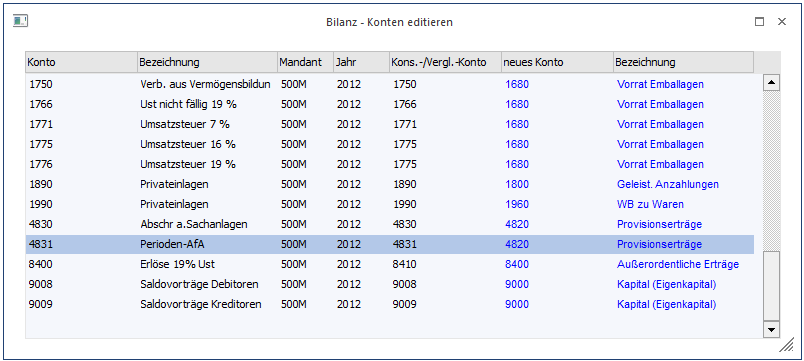
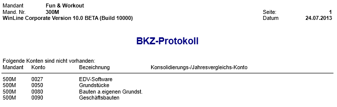

Beim Aufruf eines Mehrjahresvergleiches oder einer Konsolidierungsbilanz wird geprüft, ob bei allen vergleichbaren Konten Konsolidierungskonten eingetragen sind. Aufgrund der BKZ die beim Konsolidierungskonto im aktuellen Mandanten eingetragen ist, erfolgt die Summierung für die Bilanzdarstellung.
Sollten bei der Bilanzsummierung fehlende Einträge festgestellt werden, erhalten Sie eine Warnmeldung:

Ø Konten editieren
Sie erhalten eine Eingabemaske zum Editieren der fehlenden Konsolidierungskonten.

Ø Protokoll ausgeben
Nach Bestätigen des Buttons "Protokoll ausgeben" wird ein BKZ-Protokoll mit den zu editierenden Konten und dem entsprechenden Mandanten automatisch an den Spooler / Drucker ausgegeben.

Ø Ignorieren
Werden die Warnhinweise auf eine falsche BKZ-Zuordnung, bzw. fehlende Konsolidierungskonten ignoriert erfolgt zwar eine Ausgabe der Bilanz, es ist aber nicht sichergestellt, dass die Zuordnungen in der von ihnen gewünschten Weise durchgehend erfolgt. D. h. der Saldo eines Kontos wird zwar in der Gesamtsumme berücksichtigt, es kann aber sein, das die Zuordnung in einer anderen BKZ-Summe erfolgt als dies notwendig ist.